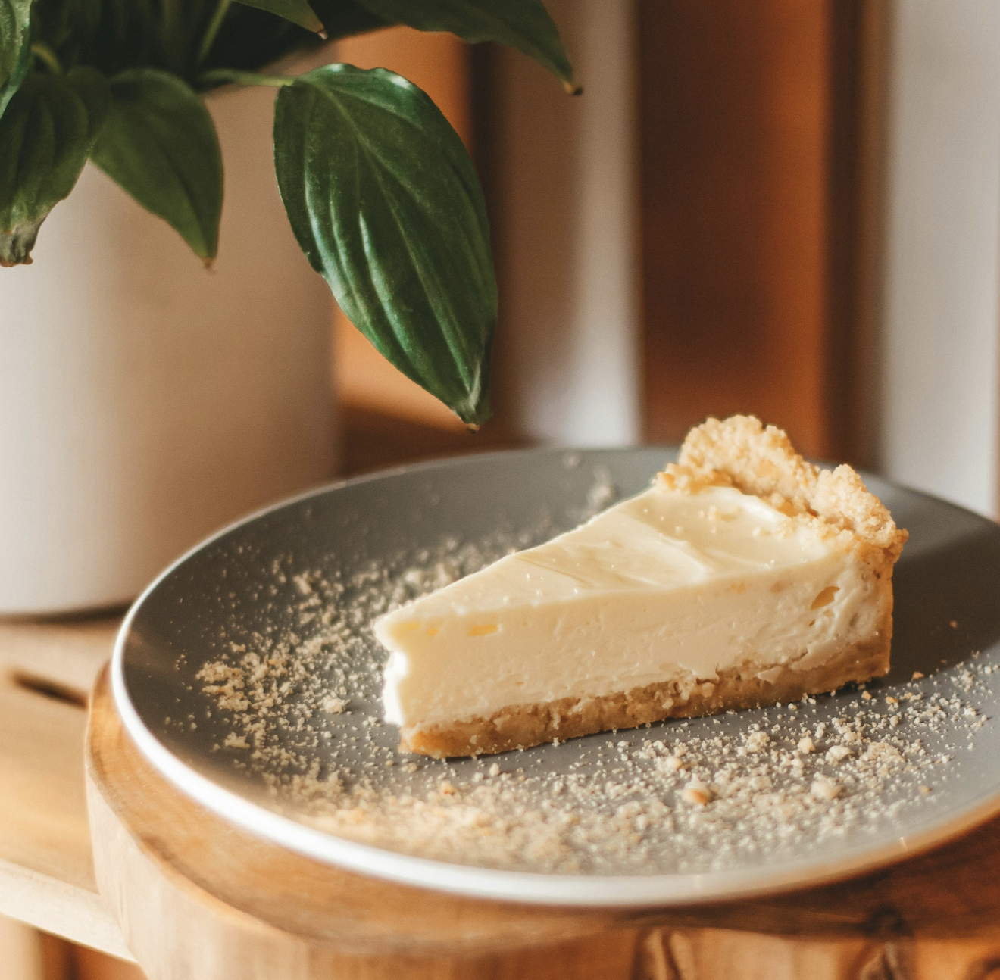

No-Bake Cheesecake Recipe

What is No-Bake Cheesecake
No-bake cheesecake takes the hassle out of making regular cheesecake but keeps all the best parts!
This indulgent and simple dessert is perfect for any occasion. With only three ingredients
and minimal equipment required, anyone can make this delicious treat! See below for how to make
no-bake cheesecake.
How to Make No-Bake Cheesecake
Prep Time: 10 minutes
Makes: Approximately 8 servings
Ingredients
- 1 9-inch graham cracker pie crust
- 2 blocks of cream cheese, softened
- 1 14oz can of sweetened condensed milk
Instructions
- Beat cream cheese on medium speed for about 30 seconds to incorporate air.
- Add the sweetened condensed milk and mix until combined.
- Transfer to the prepared graham cracker crust and smooth the top.
- Refrigerate until the cheesecake is set, at least 8 hours.
- Slice, serve, and enjoy! Store leftovers in an air-tight container in the
refrigerator for up to three days.
Return to Home